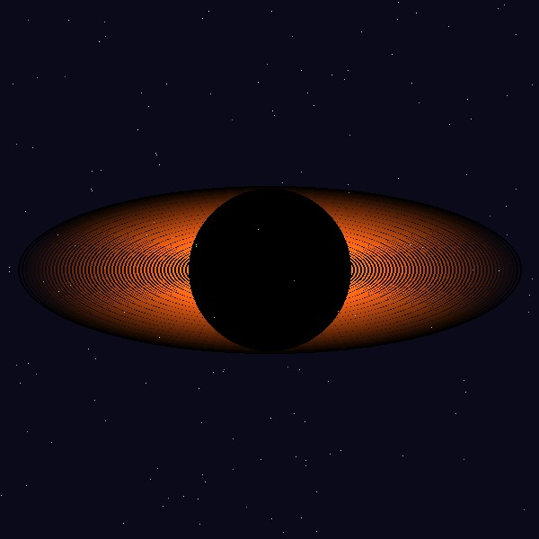

What Is a Black Hole?
A black hole is a region of space where gravity is so strong that nothing, not even light, can escape it. Black holes form when massive stars collapse at the end of their life cycle.
Because no light can escape, black holes cannot be seen directly. Scientists detect them by observing how nearby stars and gas behave around an invisible object.
Why Studying Black Holes Matters
Studying black holes helps scientists test Einstein's theory of general relativity under the most extreme conditions in the universe.

Types of Black Holes
- Stellar black holes
- Supermassive black holes
- Intermediate black holes
How a Black Hole Forms
- A massive star runs out of nuclear fuel
- The star's core collapses under its own gravity
- The outer layers explode outward as a supernova
- The collapsed core becomes a black hole